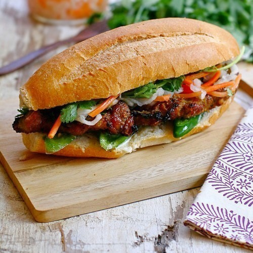

Vietnamese Banh Mi

In Vietnamese Cuisine, bánh mì or banh mi is a short baguette with thin, crisp crust and soft, airy texture. It is often split lengthwise and filled with savory ingredients like a submarine sandwich and served as a meal, called bánh mì thịt. Plain banh mi is also eaten as a staple food.
Information
- Prep: 10 mins
- Cook: 5 mins
- Total: 15 mins
- Servings: 4
- Yield: 4 sandwiches
Ingredients
- 4 boneless pork loin chops, cut 1/4 inch thick
- 4 (7 inch) French bread baguettes, split lengthwise
- 4 teaspoons mayonnaise, or to taste
- 1 ounce chile sauce with garlic
- ¼ cup fresh lime juice
- 1 small red onion, sliced into rings
- 1 medium cucumber, peeled and sliced lengthwise
- 2 tablespoons chopped fresh cilantro
- salt and pepper to taste
Directions
- Preheat the oven's broiler. Place the pork chops on a broiling pan and set under the broiler.
- Cook for about 5 minutes, turning once, or until browned on each side.
- Open the French rolls and spread mayonnaise on the insides. Place one of the cooked pork chops into each roll.
- Spread chile sauce directly on the meat. Sprinkle with a little lime juice and top with slices of onion, cucumber, cilantro, salt and pepper.
- Finish with another quick drizzle of lime juice.
Return to Main Page